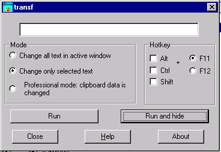

Забыли вовремя переключить раскладку клавиатуры ?Автор: Селин Дмитрий Общие сведения Программа transf предназначена для перевода на лету текста, набранного Вами в английской раскладке клавиатуры на русский и наоборот. Поясним на примере: допустим вы набираете письмо в Outlook Express. И при этом сочетание клавиш <ctrl>+<chift> заедает. Тогда вполне возможно, что после того, как Вы набрали английский текст в поле адреса, то и сам текст письма продолжите набирать в английской раскладке. То есть вместо текста “Здравствуйте Петр Иванович” у Вас получиться “Plhfdcndeqnt Gtnh Bdfyjdbx”. Именно для помощи Вам в таких ситуациях и предназначена данная программа. В нашем примере, если у вас на компьютере установлена это программа, Вам достаточно выделить неправильно введенный текст и нажать <F11>, и он автоматически переведется в “Здравствуйте Петр Иванович ”. Компилятор: Visual C++ 
Интерфейс I. Режим Программа может работать в нескольких режимах:
1 режим – весь текст в активном окне ввода (в котором находится курсор) изменяется. Русский текст меняется на английский, а английский. Следует заметить, что во-первых это не очень удобный режим, так как часто бывает нужно заменить не весь текст, а лишь какую-то его часть. И во-вторых в этом режиме программа работает не=очень стабильно и возможно будет конфликтовать с некоторыми приложениями.
2 режим – только выделенный текст изменяется. То есть, вы выделяете мышкой или клавишами <ctrl>+<стрелка> некоторый фрагмент текста и нажимаете <F11>. После этого весь выделенный вами текст изменяется.
3 режим – изменяет текст в буфере обмена. Для изменения текста в этом режиме нужно действовать следующим образом: а) Выделяем текст (как в режиме 2). б) Копируем выделенный текст в буфер обмена. Это можно сделать либо нажав сочетание клавиш <ctrl>+<ins>, либо <ctrl>+C. Еще одним способом скопировать выделенный текст в буфер обмена - сделать это мышкой. Для этого щелкаем правой кнопкой мыши на выделенном тексте и в выпавшем меню выбираем пункт “скопировать” или “вырезать” в) Нажимаем горячую клавишу, например F11. г) Вставляем текст из буфера обмена. Опять же это можно сделать несколькими способами: нажать комбинацию <shift>+<ins>, либо <ctrl>+V, либо щелкнуть правой кнопкой мыши в том месте куда вы собираетесь вставлять текст и в выпавшем меню выбрать пункт “Вставить”. В результате появится уже измененный текст. Замечание: В режиме 2 программа для работы использует буфер обмена. В ней предусмотрена защита от повреждения данных в буфере но все-таки я советую быть осторожными и не оставлять важных данных, которые нельзя восстановить, в буфере обмена перед использованием программы. Ограничения: В режимах 1 и 2 программа может заменять текст только в стандартных окнах ввода Windows. Например, окно ввода текста сообщения в ICQ или поле ввода адреса в Internet explorer или Outlook Express. Для таких программ, которые сами отображают содержимое своего окна ввода (например, Word или Internet Explorer) режимы 1 и 2 не действуют. Для изменения текста в таких программах пользуйтесь режимом 3. Исключение составляет MS Outlook, для возможность в режиме 2 изменять текст в окне ввода текста письма сделана специально. Если Вы хотите, чтоб программа Transf изменяла текст в других программах в режиме 2, обращайтесь к автору. Горячая клавиша. В этом разделе можно выбрать, по нажатию какой клавиши или комбинации клавиш программа будет активироваться и производить замену. Можно выбрать либо <F11>, либо <F12>. При этом можно установить, в сочетаниями с какими из командных клавиш будет использоваться выбранная Вами функциональная клавиша. Управляющие кнопки. “Запустить” – по нажатию на горячую клавишу программа будет производить замену, но окно настроек не исчезнет с экрана. “Запустить и спрятать” – По нажатию на горячую клавишу программа производит замену, при этом окно настроек исчезает, в Systray появляется иконка, по нажатию на которую окно настроек снова появляется. Назначение остальных кнопок, я думаю, очевидно. Также есть возможность редактировать какие символы заменяются и на какие. Для этого откройте в простом текстовом редакторе файл transf.dat. В первой строчке символы, которые заменяются, во второй - символы, на которые они заменяются. При редактировании нужно помнить три правила: один символ заменяется одним. Количество символов в верхней строке должно равняться количеству символов в нижней. В строке не должно быть повторяющихся символов. Редактировать лучше в сеансе DOS, или например встроенным редактором FAR’a ,так как в этом случае все символы будут занимать одинаковое место на экране, и символ который заменяется будет стоять точно над символом, на который он меняется. И последнее, если Вы случайно испортили этот файл, и программа работает некорректно, лучше удалите его вообще (в этом случае программа будет использовать наборы символов по умолчанию) или обращайтесь ко мне, я вышлю Вам этот файл бесплатно. И последнее, программа сохраняет свои настройки автоматически, так что если Вы выключили компьютер когда программа была активна, то в следующий раз она запустится и сразу активизируется, и ее иконка появится в Systray. Окно настроек при этом появляться не будет. |